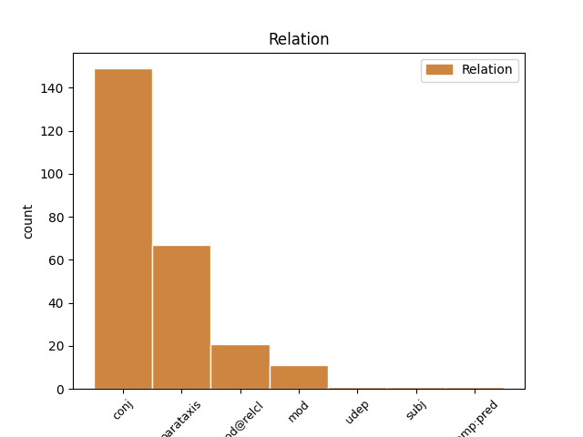
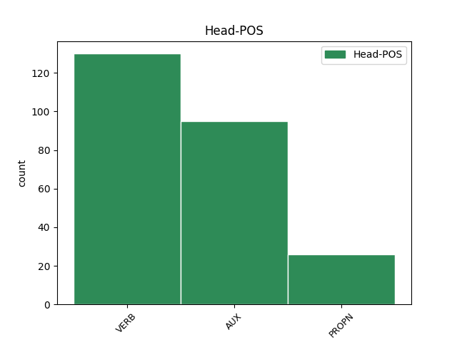
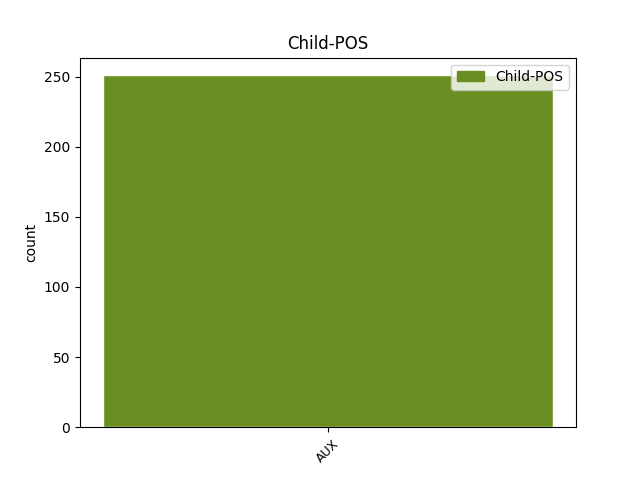

Distribution of features within this leaf



Agreement Rules sorted by frequency.
- When the dependent token is the conjunct(conj) of the head token, and the head token is VERB and the dependent token is AUX.
1 Na _ _ _ _ 0 _ _ _
2 acht _ _ _ _ 0 _ _ _
3 verhalen _ _ _ _ 0 _ _ _
4 ontstond ontstaan VERB WW|pv|verl|ev Number=Sing|Tense=Past|VerbForm=Fin 0 _ _ _
5 er _ _ _ _ 0 _ _ _
6 onenigheid _ _ _ _ 0 _ _ _
7 tussen _ _ _ _ 0 _ _ _
8 Vandersteen _ _ _ _ 0 _ _ _
9 en _ _ _ _ 0 _ _ _
10 Hergé _ _ _ _ 0 _ _ _
11 en _ _ _ _ 0 _ _ _
12 werd worden AUX WW|pv|verl|ev Number=Sing|Tense=Past|VerbForm=Fin 4 conj _ _
13 deze _ _ _ _ 0 _ _ _
14 reeks _ _ _ _ 0 _ _ _
15 gestopt _ _ _ _ 0 _ _ _
16 . _ _ _ _ 0 _ _ _
1 De _ _ _ _ 0 _ _ _
2 serie _ _ _ _ 0 _ _ _
3 werd worden AUX WW|pv|verl|ev Number=Sing|Tense=Past|VerbForm=Fin 0 _ _ _
4 geregisseerd _ _ _ _ 0 _ _ _
5 door _ _ _ _ 0 _ _ _
6 Patrick _ _ _ _ 0 _ _ _
7 Lebon _ _ _ _ 0 _ _ _
8 en _ _ _ _ 0 _ _ _
9 de _ _ _ _ 0 _ _ _
10 muziek _ _ _ _ 0 _ _ _
11 was zijn AUX WW|pv|verl|ev Number=Sing|Tense=Past|VerbForm=Fin 3 conj _ _
12 geschreven _ _ _ _ 0 _ _ _
13 door _ _ _ _ 0 _ _ _
14 Piet _ _ _ _ 0 _ _ _
15 Souer _ _ _ _ 0 _ _ _
16 . _ _ _ _ 0 _ _ _
1 Het _ _ _ _ 0 _ _ _
2 enige _ _ _ _ 0 _ _ _
3 familieverband _ _ _ _ 0 _ _ _
4 tussen _ _ _ _ 0 _ _ _
5 de _ _ _ _ 0 _ _ _
6 personages _ _ _ _ 0 _ _ _
7 is zijn AUX WW|pv|tgw|ev Number=Sing|Tense=Pres|VerbForm=Fin 0 _ _ _
8 de _ _ _ _ 0 _ _ _
9 relatie _ _ _ _ 0 _ _ _
10 tussen _ _ _ _ 0 _ _ _
11 Wiske _ _ _ _ 0 _ _ _
12 en _ _ _ _ 0 _ _ _
13 tante _ _ _ _ 0 _ _ _
14 Sidonia _ _ _ _ 0 _ _ _
15 : _ _ _ _ 0 _ _ _
16 Tante _ _ _ _ 0 _ _ _
17 Sidonia _ _ _ _ 0 _ _ _
18 is zijn AUX WW|pv|tgw|ev Number=Sing|Tense=Pres|VerbForm=Fin 7 parataxis _ _
19 écht _ _ _ _ 0 _ _ _
20 de _ _ _ _ 0 _ _ _
21 tante _ _ _ _ 0 _ _ _
22 van _ _ _ _ 0 _ _ _
23 Wiske _ _ _ _ 0 _ _ _
24 . _ _ _ _ 0 _ _ _
1 Dit _ _ _ _ 0 _ _ _
2 komt komen VERB WW|pv|tgw|met-t Number=Sing|Tense=Pres|VerbForm=Fin 0 _ _ _
3 uit _ _ _ _ 0 _ _ _
4 het _ _ _ _ 0 _ _ _
5 boek _ _ _ _ 0 _ _ _
6 van _ _ _ _ 0 _ _ _
7 de _ _ _ _ 0 _ _ _
8 profeet _ _ _ _ 0 _ _ _
9 en _ _ _ _ 0 _ _ _
10 betekent _ _ _ _ 0 _ _ _
11 : _ _ _ _ 0 _ _ _
12 ` _ _ _ _ 0 _ _ _
13 Uit _ _ _ _ 0 _ _ _
14 u _ _ _ _ 0 _ _ _
15 zal zullen AUX WW|pv|tgw|ev Number=Sing|Tense=Pres|VerbForm=Fin 2 parataxis _ _
16 Mij _ _ _ _ 0 _ _ _
17 Een _ _ _ _ 0 _ _ _
18 ontspruiten _ _ _ _ 0 _ _ _
19 , _ _ _ _ 0 _ _ _
20 die _ _ _ _ 0 _ _ _
21 over _ _ _ _ 0 _ _ _
22 Israël _ _ _ _ 0 _ _ _
23 zal _ _ _ _ 0 _ _ _
24 heersen _ _ _ _ 0 _ _ _
25 ' _ _ _ _ 0 _ _ _
26 . _ _ _ _ 0 _ _ _
1 Vanaf _ _ _ _ 0 _ _ _
2 het _ _ _ _ 0 _ _ _
3 tweede _ _ _ _ 0 _ _ _
4 album _ _ _ _ 0 _ _ _
5 , _ _ _ _ 0 _ _ _
6 « _ _ _ _ 0 _ _ _
7 Op _ _ _ _ 0 _ _ _
8 het _ _ _ _ 0 _ _ _
9 eiland _ _ _ _ 0 _ _ _
10 Amoras _ _ _ _ 0 _ _ _
11 » _ _ _ _ 0 _ _ _
12 , _ _ _ _ 0 _ _ _
13 verdwijnt _ _ _ _ 0 _ _ _
14 Rikki _ _ _ _ 0 _ _ _
15 uit _ _ _ _ 0 _ _ _
16 beeld _ _ _ _ 0 _ _ _
17 en _ _ _ _ 0 _ _ _
18 komt _ _ _ _ 0 _ _ _
19 Suske Suske PROPN N|eigen|ev|basis|zijd|stan Gender=Com|Number=Sing 0 _ _ _
20 , _ _ _ _ 0 _ _ _
21 die _ _ _ _ 0 _ _ _
22 ongeveer _ _ _ _ 0 _ _ _
23 even _ _ _ _ 0 _ _ _
24 oud _ _ _ _ 0 _ _ _
25 is zijn AUX WW|pv|tgw|ev Number=Sing|Tense=Pres|VerbForm=Fin 19 mod@relcl _ _
26 als _ _ _ _ 0 _ _ _
27 Wiske _ _ _ _ 0 _ _ _
28 , _ _ _ _ 0 _ _ _
29 in _ _ _ _ 0 _ _ _
30 de _ _ _ _ 0 _ _ _
31 plaats _ _ _ _ 0 _ _ _
32 . _ _ _ _ 0 _ _ _
1 2003 _ _ _ _ 0 _ _ _
2 U.S. _ _ _ _ 0 _ _ _
3 Open _ _ _ _ 0 _ _ _
4 , _ _ _ _ 0 _ _ _
5 halve _ _ _ _ 0 _ _ _
6 finales _ _ _ _ 0 _ _ _
7 : _ _ _ _ 0 _ _ _
8 Justine _ _ _ _ 0 _ _ _
9 verslaat verslaan VERB WW|pv|tgw|met-t Number=Sing|Tense=Pres|VerbForm=Fin 0 _ _ _
10 Jennifer _ _ _ _ 0 _ _ _
11 Capriati _ _ _ _ 0 _ _ _
12 in _ _ _ _ 0 _ _ _
13 een _ _ _ _ 0 _ _ _
14 tiebreak _ _ _ _ 0 _ _ _
15 in _ _ _ _ 0 _ _ _
16 de _ _ _ _ 0 _ _ _
17 laatste _ _ _ _ 0 _ _ _
18 set _ _ _ _ 0 _ _ _
19 , _ _ _ _ 0 _ _ _
20 waarna _ _ _ _ 0 _ _ _
21 ze _ _ _ _ 0 _ _ _
22 wordt worden AUX WW|pv|tgw|met-t Number=Sing|Tense=Pres|VerbForm=Fin 9 mod _ _
23 afgevoerd _ _ _ _ 0 _ _ _
24 naar _ _ _ _ 0 _ _ _
25 het _ _ _ _ 0 _ _ _
26 ziekenhuis _ _ _ _ 0 _ _ _
27 wegens _ _ _ _ 0 _ _ _
28 uitputting _ _ _ _ 0 _ _ _
29 . _ _ _ _ 0 _ _ _
1 De _ _ _ _ 0 _ _ _
2 nieuwe _ _ _ _ 0 _ _ _
3 gemeente _ _ _ _ 0 _ _ _
4 Antwerpen _ _ _ _ 0 _ _ _
5 is _ _ _ _ 0 _ _ _
6 sindsdien _ _ _ _ 0 _ _ _
7 veruit _ _ _ _ 0 _ _ _
8 de _ _ _ _ 0 _ _ _
9 gemeente _ _ _ _ 0 _ _ _
10 met _ _ _ _ 0 _ _ _
11 de _ _ _ _ 0 _ _ _
12 meeste _ _ _ _ 0 _ _ _
13 inwoners _ _ _ _ 0 _ _ _
14 van _ _ _ _ 0 _ _ _
15 België België PROPN N|eigen|ev|basis|onz|stan Gender=Neut|Number=Sing 0 _ _ _
16 ( _ _ _ _ 0 _ _ _
17 qua _ _ _ _ 0 _ _ _
18 oppervlakte _ _ _ _ 0 _ _ _
19 is zijn AUX WW|pv|tgw|ev Number=Sing|Tense=Pres|VerbForm=Fin 15 mod _ _
20 Doornik _ _ _ _ 0 _ _ _
21 groter _ _ _ _ 0 _ _ _
22 ) _ _ _ _ 0 _ _ _
23 . _ _ _ _ 0 _ _ _
1 CD&V CD&V PROPN N|eigen|ev|basis|zijd|stan Gender=Com|Number=Sing 0 _ _ _
2 : _ _ _ _ 0 _ _ _
3 Na _ _ _ _ 0 _ _ _
4 het _ _ _ _ 0 _ _ _
5 slechte _ _ _ _ 0 _ _ _
6 resultaat _ _ _ _ 0 _ _ _
7 van _ _ _ _ 0 _ _ _
8 de _ _ _ _ 0 _ _ _
9 CVP _ _ _ _ 0 _ _ _
10 tijdens _ _ _ _ 0 _ _ _
11 de _ _ _ _ 0 _ _ _
12 verkiezingen _ _ _ _ 0 _ _ _
13 van _ _ _ _ 0 _ _ _
14 1999 _ _ _ _ 0 _ _ _
15 werd worden AUX WW|pv|verl|ev Number=Sing|Tense=Past|VerbForm=Fin 1 parataxis _ _
16 Stefaan _ _ _ _ 0 _ _ _
17 De _ _ _ _ 0 _ _ _
18 Clerck _ _ _ _ 0 _ _ _
19 gekozen _ _ _ _ 0 _ _ _
20 tot _ _ _ _ 0 _ _ _
21 algemeen _ _ _ _ 0 _ _ _
22 partijvoorzitter _ _ _ _ 0 _ _ _
23 en _ _ _ _ 0 _ _ _
24 startte _ _ _ _ 0 _ _ _
25 een _ _ _ _ 0 _ _ _
26 organisatorische _ _ _ _ 0 _ _ _
27 en _ _ _ _ 0 _ _ _
28 ideologische _ _ _ _ 0 _ _ _
29 hervorming _ _ _ _ 0 _ _ _
30 . _ _ _ _ 0 _ _ _
1 De _ _ _ _ 0 _ _ _
2 afspraak _ _ _ _ 0 _ _ _
3 daarbij _ _ _ _ 0 _ _ _
4 was zijn AUX WW|pv|verl|ev Number=Sing|Tense=Past|VerbForm=Fin 0 _ _ _
5 dat _ _ _ _ 0 _ _ _
6 deze _ _ _ _ 0 _ _ _
7 oververtegenwoordiging _ _ _ _ 0 _ _ _
8 in _ _ _ _ 0 _ _ _
9 evenwicht _ _ _ _ 0 _ _ _
10 werd worden AUX WW|pv|verl|ev Number=Sing|Tense=Past|VerbForm=Fin 4 comp:pred _ _
11 gebracht _ _ _ _ 0 _ _ _
12 met _ _ _ _ 0 _ _ _
13 waarborgen _ _ _ _ 0 _ _ _
14 voor _ _ _ _ 0 _ _ _
15 de _ _ _ _ 0 _ _ _
16 Vlamingen _ _ _ _ 0 _ _ _
17 in _ _ _ _ 0 _ _ _
18 Brussel _ _ _ _ 0 _ _ _
19 ( _ _ _ _ 0 _ _ _
20 slechts _ _ _ _ 0 _ _ _
21 20% _ _ _ _ 0 _ _ _
22 van _ _ _ _ 0 _ _ _
23 de _ _ _ _ 0 _ _ _
24 Brusselse _ _ _ _ 0 _ _ _
25 bevolking _ _ _ _ 0 _ _ _
26 ) _ _ _ _ 0 _ _ _
27 . _ _ _ _ 0 _ _ _
1 Wanneer _ _ _ _ 0 _ _ _
2 ze _ _ _ _ 0 _ _ _
3 Leopold _ _ _ _ 0 _ _ _
4 III _ _ _ _ 0 _ _ _
5 heeft hebben AUX WW|pv|tgw|met-t Number=Sing|Tense=Pres|VerbForm=Fin 8 subj _ _
6 ontmoet _ _ _ _ 0 _ _ _
7 , _ _ _ _ 0 _ _ _
8 is zijn AUX WW|pv|tgw|ev Number=Sing|Tense=Pres|VerbForm=Fin 0 _ _ _
9 niet _ _ _ _ 0 _ _ _
10 bekend _ _ _ _ 0 _ _ _
11 . _ _ _ _ 0 _ _ _
1 In _ _ _ _ 0 _ _ _
2 de _ _ _ _ 0 _ _ _
3 media _ _ _ _ 0 _ _ _
4 draaide draaien VERB WW|pv|verl|ev Number=Sing|Tense=Past|VerbForm=Fin 0 _ _ _
5 deze _ _ _ _ 0 _ _ _
6 verkiezingen _ _ _ _ 0 _ _ _
7 vooral _ _ _ _ 0 _ _ _
8 rond _ _ _ _ 0 _ _ _
9 wie _ _ _ _ 0 _ _ _
10 de _ _ _ _ 0 _ _ _
11 grootste _ _ _ _ 0 _ _ _
12 partij _ _ _ _ 0 _ _ _
13 zou zullen AUX WW|pv|verl|ev Number=Sing|Tense=Past|VerbForm=Fin 4 udep _ _
14 worden _ _ _ _ 0 _ _ _
15 en _ _ _ _ 0 _ _ _
16 dus _ _ _ _ 0 _ _ _
17 de _ _ _ _ 0 _ _ _
18 eerste _ _ _ _ 0 _ _ _
19 minister _ _ _ _ 0 _ _ _
20 zou _ _ _ _ 0 _ _ _
21 mogen _ _ _ _ 0 _ _ _
22 leveren _ _ _ _ 0 _ _ _
23 . _ _ _ _ 0 _ _ _
1 Zo _ _ _ _ 0 _ _ _
2 is _ _ _ _ 0 _ _ _
3 seks _ _ _ _ 0 _ _ _
4 taboe _ _ _ _ 0 _ _ _
5 , _ _ _ _ 0 _ _ _
6 mogen _ _ _ _ 0 _ _ _
7 er _ _ _ _ 0 _ _ _
8 geen _ _ _ _ 0 _ _ _
9 hoofdpersonen _ _ _ _ 0 _ _ _
10 bijkomen _ _ _ _ 0 _ _ _
11 of _ _ _ _ 0 _ _ _
12 afvallen _ _ _ _ 0 _ _ _
13 , _ _ _ _ 0 _ _ _
14 mogen _ _ _ _ 0 _ _ _
15 de _ _ _ _ 0 _ _ _
16 hoofdpersonen _ _ _ _ 0 _ _ _
17 niet _ _ _ _ 0 _ _ _
18 veranderen _ _ _ _ 0 _ _ _
19 of _ _ _ _ 0 _ _ _
20 verouderen _ _ _ _ 0 _ _ _
21 , _ _ _ _ 0 _ _ _
22 en _ _ _ _ 0 _ _ _
23 mag mogen AUX WW|pv|tgw|ev Number=Sing|Tense=Pres|VerbForm=Fin 0 _ _ _
24 een _ _ _ _ 0 _ _ _
25 aantal _ _ _ _ 0 _ _ _
26 gegeven _ _ _ _ 0 _ _ _
27 situaties _ _ _ _ 0 _ _ _
28 niet _ _ _ _ 0 _ _ _
29 veranderen _ _ _ _ 0 _ _ _
30 ( _ _ _ _ 0 _ _ _
31 bijvoorbeeld _ _ _ _ 0 _ _ _
32 een _ _ _ _ 0 _ _ _
33 huwelijk _ _ _ _ 0 _ _ _
34 tussen _ _ _ _ 0 _ _ _
35 Sidonia _ _ _ _ 0 _ _ _
36 en _ _ _ _ 0 _ _ _
37 Lambik _ _ _ _ 0 _ _ _
38 zal zullen AUX WW|pv|tgw|ev Number=Sing|Tense=Pres|VerbForm=Fin 23 mod _ _
39 nooit _ _ _ _ 0 _ _ _
40 plaatsvinden _ _ _ _ 0 _ _ _
41 ) _ _ _ _ 0 _ _ _
42 . _ _ _ _ 0 _ _ _
Disagree Examples:
1 Sommige _ _ _ _ 0 _ _ _
2 in _ _ _ _ 0 _ _ _
3 Antwerpen _ _ _ _ 0 _ _ _
4 geboren _ _ _ _ 0 _ _ _
5 joden _ _ _ _ 0 _ _ _
6 spreken spreken VERB WW|pv|tgw|mv Number=Plur|Tense=Pres|VerbForm=Fin 0 _ _ _
7 zelfs _ _ _ _ 0 _ _ _
8 niet _ _ _ _ 0 _ _ _
9 erg _ _ _ _ 0 _ _ _
10 goed _ _ _ _ 0 _ _ _
11 Nederlands _ _ _ _ 0 _ _ _
12 ; _ _ _ _ 0 _ _ _
13 hun _ _ _ _ 0 _ _ _
14 moedertaal _ _ _ _ 0 _ _ _
15 is zijn AUX WW|pv|tgw|ev Number=Sing|Tense=Pres|VerbForm=Fin 6 parataxis _ _
16 Jiddish _ _ _ _ 0 _ _ _
17 . _ _ _ _ 0 _ _ _
1 In _ _ _ _ 0 _ _ _
2 het _ _ _ _ 0 _ _ _
3 jaar _ _ _ _ 0 _ _ _
4 2006 _ _ _ _ 0 _ _ _
5 worden _ _ _ _ 0 _ _ _
6 tal _ _ _ _ 0 _ _ _
7 van _ _ _ _ 0 _ _ _
8 activiteiten _ _ _ _ 0 _ _ _
9 georganiseerd _ _ _ _ 0 _ _ _
10 in _ _ _ _ 0 _ _ _
11 het _ _ _ _ 0 _ _ _
12 kader _ _ _ _ 0 _ _ _
13 van _ _ _ _ 0 _ _ _
14 Brabant Brabant PROPN N|eigen|ev|basis|onz|stan Gender=Neut|Number=Sing 0 _ _ _
15 1106-2006 _ _ _ _ 0 _ _ _
16 , _ _ _ _ 0 _ _ _
17 waarvoor _ _ _ _ 0 _ _ _
18 veel _ _ _ _ 0 _ _ _
19 ( _ _ _ _ 0 _ _ _
20 internationale _ _ _ _ 0 _ _ _
21 ) _ _ _ _ 0 _ _ _
22 bezoekers _ _ _ _ 0 _ _ _
23 worden worden AUX WW|pv|tgw|mv Number=Plur|Tense=Pres|VerbForm=Fin 14 mod@relcl _ _
24 verwacht _ _ _ _ 0 _ _ _
25 in _ _ _ _ 0 _ _ _
26 Nederland _ _ _ _ 0 _ _ _
27 en _ _ _ _ 0 _ _ _
28 Vlaanderen _ _ _ _ 0 _ _ _
29 / _ _ _ _ 0 _ _ _
30 België _ _ _ _ 0 _ _ _
31 voor _ _ _ _ 0 _ _ _
32 het _ _ _ _ 0 _ _ _
33 Brabant _ _ _ _ 0 _ _ _
34 900 _ _ _ _ 0 _ _ _
35 jaar _ _ _ _ 0 _ _ _
36 . _ _ _ _ 0 _ _ _
1 Zoals _ _ _ _ 0 _ _ _
2 in _ _ _ _ 0 _ _ _
3 veel _ _ _ _ 0 _ _ _
4 grote _ _ _ _ 0 _ _ _
5 steden _ _ _ _ 0 _ _ _
6 bevinden bevinden VERB WW|pv|tgw|mv Number=Plur|Tense=Pres|VerbForm=Fin 0 _ _ _
7 uitgaansgelegenheden _ _ _ _ 0 _ _ _
8 zich _ _ _ _ 0 _ _ _
9 verspreid _ _ _ _ 0 _ _ _
10 over _ _ _ _ 0 _ _ _
11 de _ _ _ _ 0 _ _ _
12 stad _ _ _ _ 0 _ _ _
13 , _ _ _ _ 0 _ _ _
14 maar _ _ _ _ 0 _ _ _
15 in _ _ _ _ 0 _ _ _
16 het _ _ _ _ 0 _ _ _
17 centrum _ _ _ _ 0 _ _ _
18 is zijn AUX WW|pv|tgw|ev Number=Sing|Tense=Pres|VerbForm=Fin 6 conj _ _
19 vooral _ _ _ _ 0 _ _ _
20 het _ _ _ _ 0 _ _ _
21 gebied _ _ _ _ 0 _ _ _
22 rond _ _ _ _ 0 _ _ _
23 de _ _ _ _ 0 _ _ _
24 Beurs _ _ _ _ 0 _ _ _
25 en _ _ _ _ 0 _ _ _
26 het _ _ _ _ 0 _ _ _
27 St. _ _ _ _ 0 _ _ _
28 Goriksplein _ _ _ _ 0 _ _ _
29 bekend _ _ _ _ 0 _ _ _
30 als _ _ _ _ 0 _ _ _
31 uitgaanscentrum _ _ _ _ 0 _ _ _
32 . _ _ _ _ 0 _ _ _
1 De _ _ _ _ 0 _ _ _
2 textielfabrikanten _ _ _ _ 0 _ _ _
3 Theo _ _ _ _ 0 _ _ _
4 Vienne _ _ _ _ 0 _ _ _
5 en _ _ _ _ 0 _ _ _
6 Maurice _ _ _ _ 0 _ _ _
7 Perez _ _ _ _ 0 _ _ _
8 organiseerden organiseren VERB WW|pv|verl|mv Number=Plur|Tense=Past|VerbForm=Fin 0 _ _ _
9 deze _ _ _ _ 0 _ _ _
10 grote _ _ _ _ 0 _ _ _
11 klassieker _ _ _ _ 0 _ _ _
12 van _ _ _ _ 0 _ _ _
13 de _ _ _ _ 0 _ _ _
14 wielersport _ _ _ _ 0 _ _ _
15 voor _ _ _ _ 0 _ _ _
16 het _ _ _ _ 0 _ _ _
17 eerst _ _ _ _ 0 _ _ _
18 in _ _ _ _ 0 _ _ _
19 1896 _ _ _ _ 0 _ _ _
20 en _ _ _ _ 0 _ _ _
21 met _ _ _ _ 0 _ _ _
22 uitzondering _ _ _ _ 0 _ _ _
23 van _ _ _ _ 0 _ _ _
24 de _ _ _ _ 0 _ _ _
25 beide _ _ _ _ 0 _ _ _
26 wereldoorlogen _ _ _ _ 0 _ _ _
27 is zijn AUX WW|pv|tgw|ev Number=Sing|Tense=Pres|VerbForm=Fin 8 conj _ _
28 de _ _ _ _ 0 _ _ _
29 wedstrijd _ _ _ _ 0 _ _ _
30 sindsdien _ _ _ _ 0 _ _ _
31 elk _ _ _ _ 0 _ _ _
32 jaar _ _ _ _ 0 _ _ _
33 verreden _ _ _ _ 0 _ _ _
34 . _ _ _ _ 0 _ _ _
1 Kasseien _ _ _ _ 0 _ _ _
2 waren zijn AUX WW|pv|verl|mv Number=Plur|Tense=Past|VerbForm=Fin 0 _ _ _
3 weliswaar _ _ _ _ 0 _ _ _
4 niet _ _ _ _ 0 _ _ _
5 onbekend _ _ _ _ 0 _ _ _
6 in _ _ _ _ 0 _ _ _
7 dat _ _ _ _ 0 _ _ _
8 gebied _ _ _ _ 0 _ _ _
9 , _ _ _ _ 0 _ _ _
10 maar _ _ _ _ 0 _ _ _
11 voor _ _ _ _ 0 _ _ _
12 die _ _ _ _ 0 _ _ _
13 tijd _ _ _ _ 0 _ _ _
14 werd worden AUX WW|pv|verl|ev Number=Sing|Tense=Past|VerbForm=Fin 2 conj _ _
15 er _ _ _ _ 0 _ _ _
16 nog _ _ _ _ 0 _ _ _
17 veel _ _ _ _ 0 _ _ _
18 gereden _ _ _ _ 0 _ _ _
19 over _ _ _ _ 0 _ _ _
20 stoffige _ _ _ _ 0 _ _ _
21 wegen _ _ _ _ 0 _ _ _
22 , _ _ _ _ 0 _ _ _
23 gemaakt _ _ _ _ 0 _ _ _
24 van _ _ _ _ 0 _ _ _
25 puin _ _ _ _ 0 _ _ _
26 en _ _ _ _ 0 _ _ _
27 grind _ _ _ _ 0 _ _ _
28 . _ _ _ _ 0 _ _ _